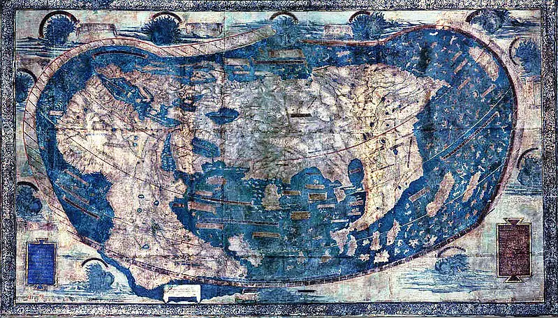

一幅错误的地图好过没有地图
昨天起床太早，加上中午团建吃饭没来得及午休，晚上十点不到就早早睡了。
2024 年已经过去了四分之一，下了一夜的雨为清明节更添了一些哀愁，但人在杭州，也没办法去给家乡先辈们的旧坟添上新土。吃完早饭，搞了杯咖啡，开始坐在窗前整理最近的所思所感。
整个一季度，我最大的积累式收获是读完了《学霸的黑科技系统》，一本被名字耽误的硬核科幻小说。作者的学术视野和文字功底都很扎实，整部作品是以学神陆舟在数学上的探索作为主线，并带着物理、生化、材料、能源、信息学科以及整个人类文明向前发展的故事。
有人说这本书有一些细节很有问题，还有人说他这个外行都能看出来作者在欺骗外行。
当然在我看来前者是正常的评价，后者则属于是见识短浅，书也白读了。
对于我自己来说，这本书进一步增加了我过去一些关键经验的 connect the dots 过程，同时对当今世界中心学科和它们的中心议题有了一个框架性的了解。这也正是我前面说“积累式收获”的原因，积累的前提是存在某种一致性的主线。对我来说，大主线就是对自然世界和人类社会的经验和理解程度，更聚焦的子线就是投资和计算机路线，但正如在关于我中提到的那样，对世界的理解是更宏大的问题，是基础中的基础。
Connect 了哪些 dots？
ACM 校赛、阿黄的超越数、中科大自主招生、小学竞赛
大学时期参加 ACM 校赛时，有一个问题涉及到超大数，也即超出了 32 位或者 64 位二进制能表达的数字范围。这个时候需要用到一些语言中内置的 long long 类型。当然语言中是否内置了超大数的处理方法不是关键，关键是我在此之前没有任何关于超大数的背景知识，于是就按照正常的整数和浮点数类型设计了算法，结果显然是精度不够，计算偏差很大。
后来我才知道这是「计算机和 C 语言数据表达精度有限的问题」，我知道这事的第一反应是：「这特么的大学的 C 语言课堂上根本没教过啊」，这题不是超纲了吗？
高中时有一次遇到一个挺难的数学题，我感觉自己东拼西凑算出了个答案。跟旁边的阿黄讨论时，他看了一眼结果说：你这个答案是错的，因为问题里是个整系数多项式，而你的答案里却搞了个超越数。我：？？？？？。
再之前，去县城跑去郑州参加中科大的自主招生，试卷上的题目几乎全是没见过的知识。这特么的超纲、绝对的超纲。
更早的回忆是小学一年级的时候去参加竞赛，结果一塌糊涂。后来听说是只有二三年级，甚至三四年级才可能有那些知识储备。
一丝明悟：学习曲线的死亡谷和启蒙点
像上面这样的情况一开始我以为同年龄段的大家都差不多，无非是知道的多点少点，没有质的区别。
因此未曾就这件事深究过，不幸的是也没有人能点拨一下，一直到工作几年中遇到了更多的人和更多的事，眼界进一步开阔了之后才逐渐明白到其中的意味。
1/ 学习的启蒙点。
每个技能或者学科的学习路径上，都存在一个爬坡的临界点，我将其称之为一个真正的启蒙点，含义就等同于康德在《何为启蒙》一文中提到的启蒙。1。
过了这个点，学生就走出了死亡之谷，可以自主利用他的理性去探索更广阔的被迷雾覆盖的地图了。
而过不了这个点，一旦引导停止，就会在低水平上不断徘徊和重复，甚至向下滑落。
2/ 启蒙点的判断。
我个人的判断方法是，学生是否根据已经掌握的知识建立了一小块框架地图，是否对未来的走向有模糊的图景，当遇到合适的知识时，不经别人指点，也能够判断出它是否可以放入到已有的地图中产生连接。
只有这样，才是真正意义上的“师傅领进门”。
这种时候，他才算具备了进一步接受大流量信息 input 的基础。
3/ 大流量的信息输入。
就后来对自主招生结果的了解来看，的确有很多人能够应付那些对我来说超纲的题目。这个时候我才意识到什么叫”真正的师资“，什么叫”为学有余力的学生准备的信息“。大城市的教师团队视野，可用的学习资源真不是小县城能比的，也造就了一批有天赋且视野非常开阔的学生，对于我们超纲的题目，对于他们来说基本上早都在视野内了。包括后来阿黄跟我提到超越数的时候我心中那种震惊，更是深刻让我感受到了差距，再后来我发现像阿黄这类的学生，大学同学里还有很多。
而我在刘楼小学读书的时候，家里没有一本课外书，我特眼馋学校那间小图书室，但是一直到毕业也没有像学生开放过，四年级的时候我鼓起勇气向校长借书看，校长说他只有马克思的资本论，我说资本论也行，他说那书连他都看不懂，也就没当回事，最终我也没有借到任何一本书。
初中的时候到县城读书真是一件痛苦但又正确的事，我用省下来的钱买了《福尔摩斯》《科幻世界》，还有幸在杂书摊上买了一些课外的科普杂志。尤其是福尔摩斯和科幻世界，它们对我造成的影响值到现在仍然都非常明显。
当然那会儿并没有卖学习主线上的进阶读物的，高中时看过的唯一高阶读物是从阿黄那里借来的陈阅增的《普通生物学》，对我影响也很大。
其实想想也是，根本完全没接触过那些东西的情况下，怎么可能通过知识迁移的方式直接回答那些问题呢？
当面对的困难超出掌握的知识面和视野太远，中间的鸿沟是难以逾越的，更何况有时候有些知识并不具备能从更基础的知识推导而出的逻辑， 你不可能在考场上临场通过简单的四则运算直接推算出积分。
4/ 彻底放下关于超纲的想法
竞赛的意义或许就在这里，它告诉参赛者，这个世界上根本没有绝对意义上的“纲”，也没有所谓的“超纲”。它要求参赛者去开拓视野，去认识更大图景的存在，去积累，把人类已探索区域上覆盖的迷雾一点点揭开，然后去探索图景的边界。
对于社会经验丰富的人来说，这一点更容易理解，没有人会为你在真实生活中的问题圈定一个认知范围，只需要在认知范围内寻觅便可找到答案。
而想要放下这个想法，到更大的范围内寻找解决方案，建立一个模糊但全局的框架是重中之重。
哥伦布与大航海时代的地图
在大航海之前，欧洲的地图混合了科学、推测和神学元素。这些地图的范围仅限于欧洲、亚洲部分地区和非洲北海岸这些已知的世界，准确性差异很大，比如当时的制图家 Henricus Martellus Germanus 在 15 世纪末所绘制的世界地图 2：

同样在十五世纪末的航海家哥伦布，早期依赖的就是这些充满错误的地图，而随后由他开启的大航海时代从根本上改变了地图制作，当探险家从新的土地返回时，制图师将这些新信息融入到他们的地图中，极大地扩大了世界地图的范围并提高了准确性。
以事后的眼光来看，早期的地图尽管漏洞百出，但它为人类提供了一个关于世界的宏观框架、一种宝贵的有限性。这种有限性和框架性，让一些具备勇气的先锋人物更有底气去探索整个世界，去发现新航道的底气， 而这些探索也终将反过来修复错误，让框架和细节更加精确。
一幅充满错误的地图要远远好于没有地图
如果你能够遇到或者找到适合你的老师、教材、小说、文章或者其他任何方法，能够让你拥有一幅自上而下的框架性地图的话，请务必不要错过它，更不要因为别人说 xx 有点小错误就放弃掉这种宝贵的机会。

人存于世，因缘际会
我是兴华，很高兴见到你